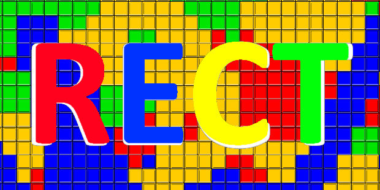

Megvalósítottam nagy és kicsi játékfejlesztő projekteket, néhány elkészítése néhány órát vett igénybe, mások több hónapig tartottak. Itt most szeretnék megosztani veletek néhány példát, hogy tanulhassatok belőle amíg én nosztalgiázom!
Miért most?
Amikor ezt olvasod, lehet, hogy a COVID-19 egy régi emlék, vagy egy múltbéli világformáló esemény. A jelenlegi valóság az, hogy ez a vírus ptthonmaradásra kényszerített mindenkit, és sok diák hirtelen otthon is megvalósítható projektekre vágyik.
Énis a COVID-19 időszak alatt kezdtem el minnél jobban foglalkozni a programozással, és a játékfejlesztésével, így már kb egy 3-4 éves minimális tapasztalat áll a hátam mögött.
Leges legelején Visual Basic nyelven kódolgattam, tanulgattam a youtube-ról, viszont nem nagyon kedveltem, majd áttértem a c#-re, későbbiekben a JavaScriptre, azon belűl is a Node JS-t használtam
